Takreem began as one founder's conviction: a tip should reach the employee who actually served you, not disappear into the bill, and people should be able to find good local spots the way they'd browse a map. No cash, no awkward card machine: scan a QR at the table, tip the person by name, and optionally leave a review.
I joined as a designer and owned the product end-to-end on the design side: information architecture, every user flow, and the full visual design, across three modules: the customer who tips, the staff who receive, and the business owner who manages it. I delivered the whole thing as static, screen-to-screen flow maps (arrows, not a clickable prototype) that an external dev team built. The shipped app looks as designed. The coin smiley mark we designed later became the product's signature.
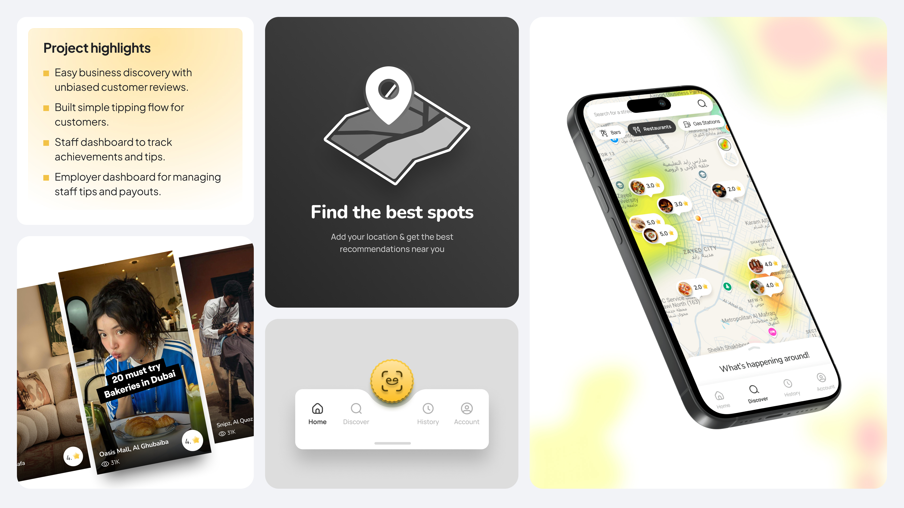
Tap image to view full sizeA wishlist, not a problem statement.
The founder didn't hand me a problem to solve. He handed me a fully pre-specified spreadsheet. Every field, tab, and feature already decided: signup, login, reset, a landing feed, map discovery with a Snapchat-style heatmap of tipping activity, boosted listings, badges, a history tab, an AI chatbot. The works. It was a kitchen sink, and everything in it was labelled must-have.
Two things made this hard to design, not just draw, and both are why the spec couldn't just be executed as written:
Understand first, then contest with evidence.
The client came with the full spec already written, so my job wasn't to execute it blindly. Wherever I wasn't aligned, I contested, but I started by understanding why each call had been made, since most had a reason behind them. When I still disagreed after that, I went back with a clear case for why it wouldn't work, backed by quick research to support the recommendation.
Demote History, put the map and the tip in front
"Why does History need to be a primary tab? As a customer, how often will someone actually go back to look at their past tips and reviews?"
One example: History was speced as a primary tab. After hearing their reasoning I still didn't buy it, so I made the case to demote it. They agreed; History moved to the third nav slot, and the map and the tip took the front.
Tip-first, review-as-fallback
That set the pattern for the whole product: lead with the act of recognition, demote the record of it. The most-loaded decision was the tip screen itself, which I made tip-first, review-as-fallback: a single toggle: You are Tipping · Skip & Review instead. The product's promise is money reaching a person, so the money stays the headline; a review is the graceful path for someone who won't pay. The tradeoff is real: I chose to lead with the higher-friction ask, but leading with the free review would have quietly turned a tipping app into a reviews app.
The flow, end to end. From scanning a code at the table to a tip, or a review, landing against the staff member by name.
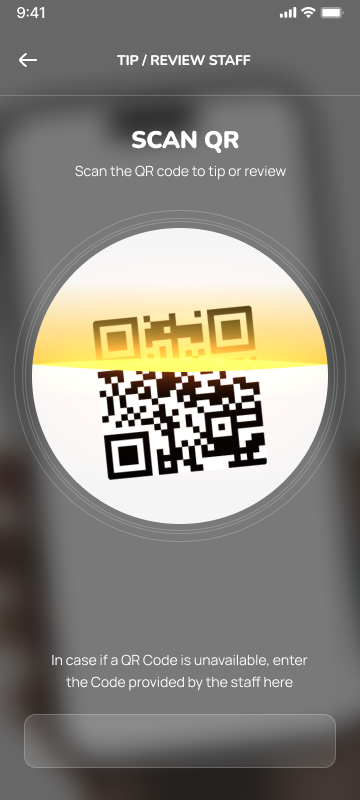
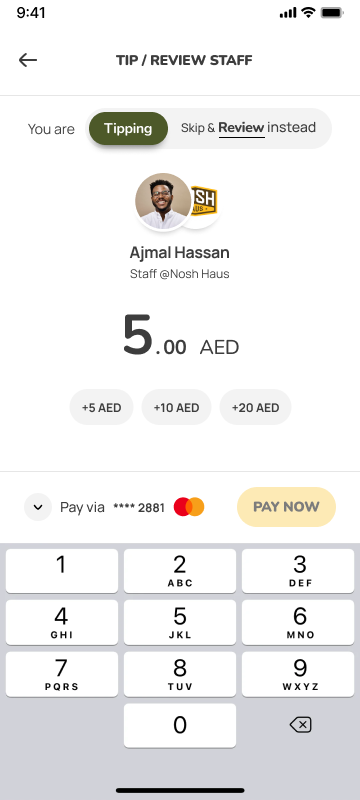
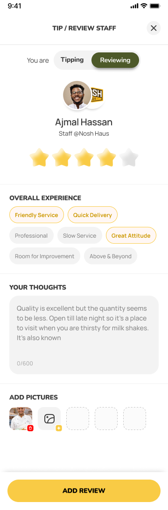
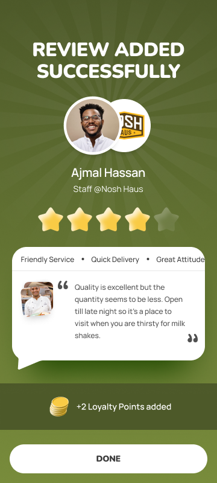
Scroll the strip to step through the flow.
Three modules, one continuous loop.
Underneath the feature list is a single loop, and mapping it is what made three modules feel like one product: the customer gives recognition (a tip, a review, or both) → the staff member receives it by name, with earnings and badges → the business owner manages locations and staff, and showcases the ratings that pull the next customer in. Every screen had to know which side of that loop it served.
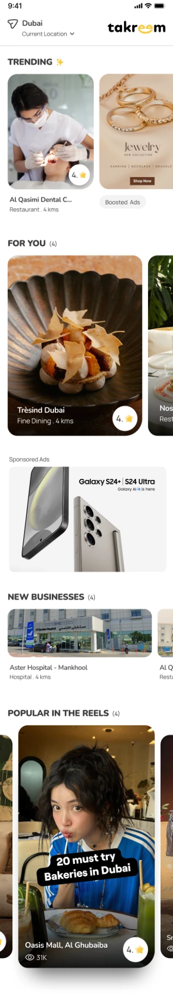
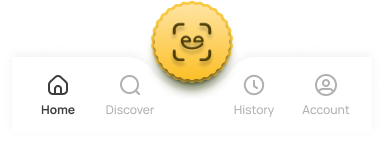
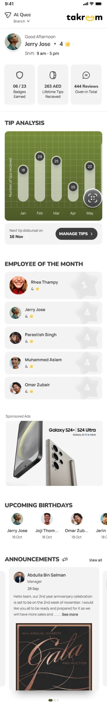
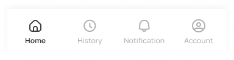
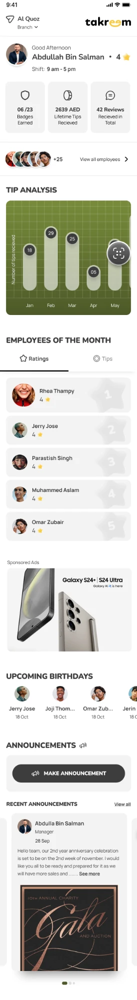
Scroll each screen. Three homepages, one product.
- Customer: scan-to-tip, map discovery, business profiles, loyalty, and a deliberately-secondary history.
- Staff: split into first-time vs. returning: claim your profile, see tips and reviews land against your name, track earnings and recognition.
- Business owner: onboarding and verification, adding locations, managing staff, and the public rating showcase.
The heatmap as an opt-in chip
For discovery, I kept the founder's "heatmap" idea but refused to let it run the map. It became an opt-in chip, a layer you switch on, so the default map stays a legible set of rated places, and the heat is there for anyone who wants to see where activity is concentrated. Kept the vision; contained the chaos.
Loyalty as the reason to close the loop
Loyalty solved a quieter problem: reviewing is altruistic: it helps strangers, not you. So the payoff moment ("+2 loyalty points added · add a review to earn more") gives the customer a selfish reason to close the loop, right when they're already feeling generous.
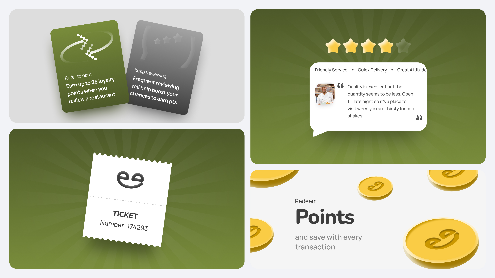
Tap image to view full size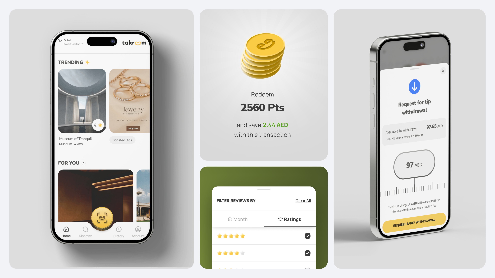
Tap image to view full sizeShipped, live, and driving results.
more reviews collected for businesses on Takreem
Review and referral figures as reported by Takreem (takreem.ae).
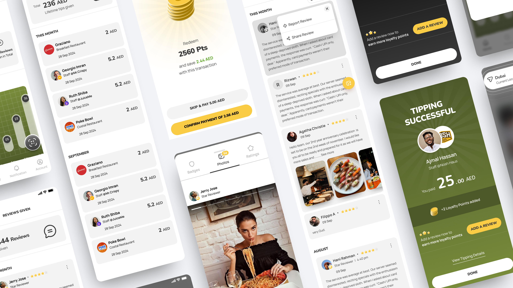
Tap image to view full size